Välfärd betyder att människor har det bra och får sina viktigaste behov uppfyllda, till exempel mat, boende, kläder, utbildning, vård och omsorg.
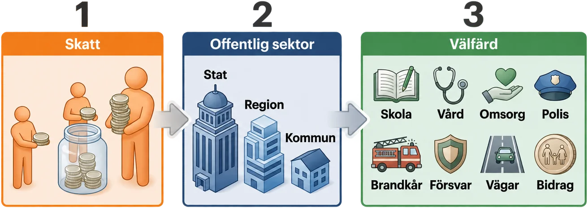
I Sverige betalas välfärden med skatt, och den som tjänar mer betalar mer.
Skatten går till den offentliga sektorn, alltså staten, regionerna och kommunerna.
De använder pengarna till sådant vi har gemensamt, till exempel skola, vård, omsorg, polis, brandkår, försvar, vägar samt bidrag och pension.
Målet
Alla ska ha ekonomisk och social trygghet, och skillnaderna mellan människor ska bli mindre.
Exempel
Din skola är gratis eftersom den betalas med skattepengar.
Jämför
I många andra länder måste man i stället betala för egna försäkringar.
Kort 2I boken: s. 89–91
Ge exempel på ekonomisk trygghet i vårt samhälle.
Ekonomisk trygghet betyder att man ska kunna klara sig ekonomiskt även när man inte kan försörja sig själv, till exempel som sjuk, arbetslös eller gammal.
Det kallas ibland vårt ekonomiska skyddsnät.
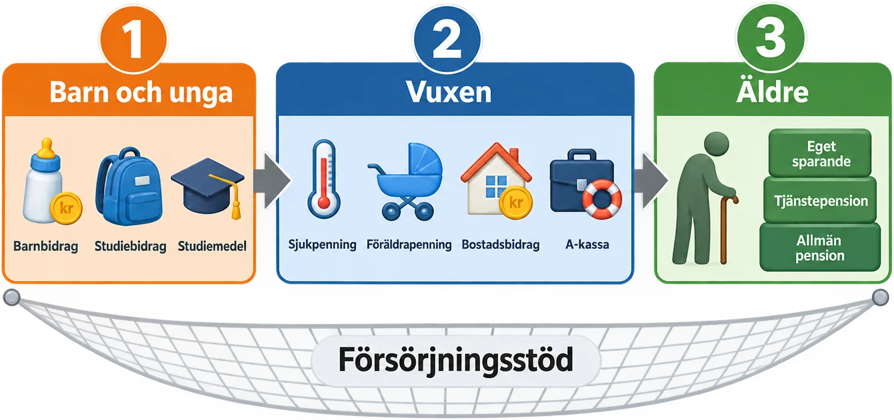
Alla barnfamiljer får barnbidrag från Försäkringskassan, och familjer med flera barn får flerbarnstillägg.
Från 16 år får den som går på gymnasietstudiebidrag.
Den som läser på högskolan kan få studiemedel från CSN. Det är mest lån och en liten del bidrag.
Den som är sjuk och inte kan arbeta får sjukpenning.
Föräldrar får föräldrapenning när de är hemma med sina barn.
Den som behöver hjälp med hyran kan få bostadsbidrag.
Den som blir arbetslös kan få pengar från a-kassan, men bara om man har varit medlem och betalat avgift.
Från 62 år får man börja ta ut pension.
Pensionen består av tre delar: allmän pension, tjänstepension från arbetsgivaren och eget sparande.
Skyddsnätet
Om inget annat räcker kan man få försörjningsstöd från kommunens socialtjänst. Det ska räcka till mat, kläder och hygien.
Exempel
Om en förälder blir sjuk och inte kan arbeta får hen sjukpenning, så att familjen ändå har pengar.
Förr
De fattigaste bodde i fattigstugor. På 1930-talet ville statsminister Per Albin Hansson bygga ett folkhem där alla är trygga.
Bra att veta
Boken skriver 62 år. Sedan 2026 får man ta ut allmän pension tidigast vid 64 år, och man har rätt att jobba kvar till 69 år.
Kort 3I boken: s. 98
Vilka för- och nackdelar finns det med privatiseringar i välfärden?
Privatisering betyder att privata företag driver välfärdstjänster, till exempel friskolor, äldreboenden, hemtjänst och vårdcentraler. Det började på 1990-talet.
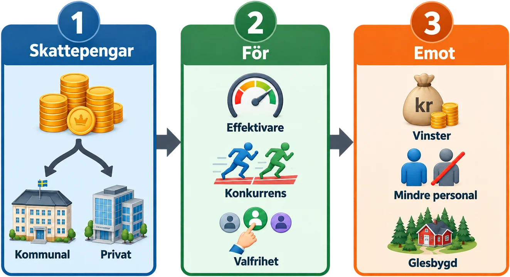
Verksamheten betalas ändå med skattepengar.
När man väljer en privat skola eller vårdcentral får företaget pengarna från kommunen eller regionen.
Privata företag kan arbeta effektivare.
Konkurrens mellan till exempel skolor kan ge högre kvalitet.
Människor får valfrihet att själva välja skola och vårdcentral.
Vissa företag tar ut stora vinster genom att ha mindre personal eller sämre kvalitet.
Skattepengar ska gå till välfärden och inte till företagsägare.
Samhället måste ge välfärd till alla, även i glesbygd där det är svårt att tjäna pengar.
Exempel
Går du i en friskola betalar kommunen din skolpeng till friskolan i stället för till den kommunala skolan.
Debatten
Politikerna är oense, och frågan om vinster i välfärden debatteras fortfarande.
Provtips
Skriv minst två fördelar och två nackdelar.
Del 2 Kommun, region och stat
Kort 4I boken: s. 92–93
Vilka är kommunens viktigaste uppgifter?
Sverige har 290 kommuner. Kommunen sköter det som finns nära dig i vardagen.
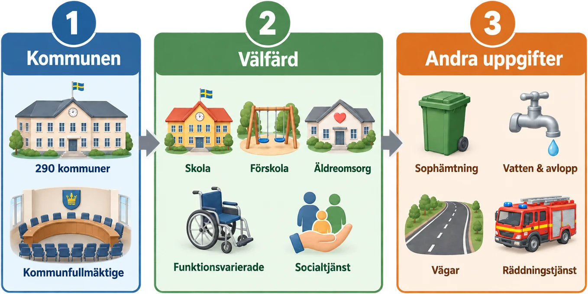
Besluten fattas av kommunfullmäktige, som är folkvalt.
Kommunfullmäktige bestämmer bland annat hur hög kommunalskatten ska vara.
Kommunen ansvarar för skolan: grundskola, gymnasium och vuxenutbildning.
Kommunen ansvarar för förskolan och dagbarnvårdare.
Kommunen tar hand om äldre genom äldreboenden och hemtjänst.
Kommunen ger stöd till funktionsvarierade, till exempel personlig assistans.
Kommunens socialtjänst betalar ut försörjningsstöd och hjälper barn och familjer som har det svårt.
Kommunen sköter också sophämtning, vatten och avlopp, vägar och räddningstjänst.
Bra att veta
Kommunen äger skolorna, men staten bestämmer skollagen och läroplanerna.
Exempel
När brandkåren rycker ut är det kommunens räddningstjänst som kommer.
Kort 5I boken: s. 94
Hur får kommunen sina inkomster?
Kommunen får sina pengar från tre håll: kommunalskatt, statsbidrag och avgifter.
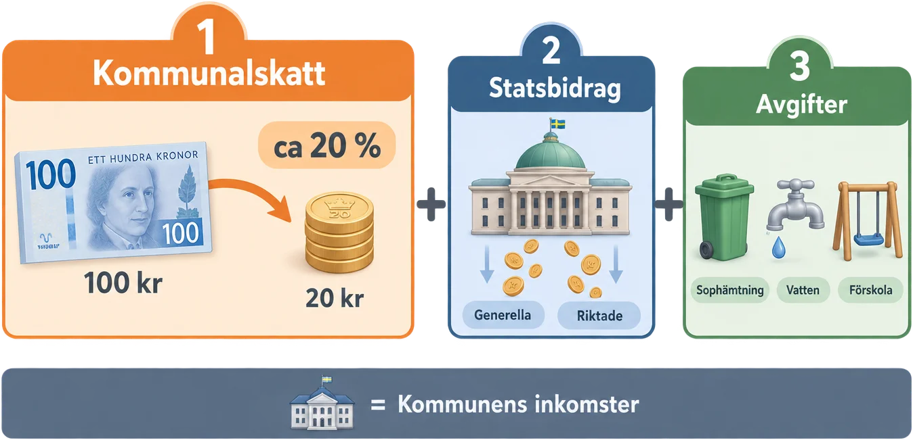
Den största inkomsten är kommunalskatten.
Den är ungefär 20 %, alltså 20 kronor av varje hundralapp du tjänar.
Kommunfullmäktige bestämmer hur hög den ska vara.
Kommunen får också pengar från staten.
Generella statsbidrag får alla kommuner.
Riktade statsbidrag ska användas till något särskilt, till exempel förskolan eller lärarlöner. Dem måste kommunen söka.
Invånarna betalar avgifter för vissa tjänster.
Det gäller till exempel sophämtning, vatten och avlopp och en del av barnomsorgen.
Bra att veta
Fattiga kommuner får mer statsbidrag och rika kommuner får mindre, så att alla ska kunna ge bra välfärd.
Kort 6I boken: s. 95
Vilka är regionens viktigaste uppgifter?
Sverige har 21 regioner. Regionerna sköter sådant som är så dyrt att större områden måste samarbeta. Förr hette de landsting.
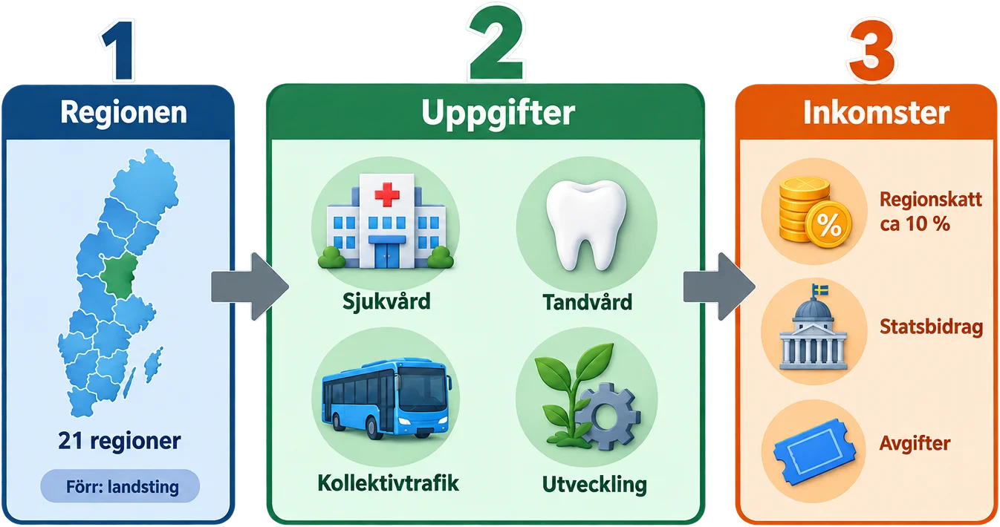
Besluten fattas av regionfullmäktige, som är folkvalt.
Regionen ansvarar för hälso- och sjukvård och tandvård.
Regionen ansvarar också för kollektivtrafiken.
Regionen arbetar med utveckling tillsammans med kommuner, företag och föreningar.
Invånarna betalar regionskatt (i boken landstingsskatt), som brukar vara ungefär 10 %.
Regionen får också statsbidrag från staten.
Dessutom betalar invånarna avgifter, till exempel för besök på vårdcentralen eller för att åka buss.
Exempel
När du går till vårdcentralen eller åker buss är det regionen som ansvarar.
Bra att veta
Varje region bestämmer själv hur hög regionskatten ska vara.
Kort 7I boken: s. 96–97
Vilka uppgifter har staten?
Staten är landets högsta beslutande och styrande makt. Den ansvarar för sådant som rör alla i Sverige.
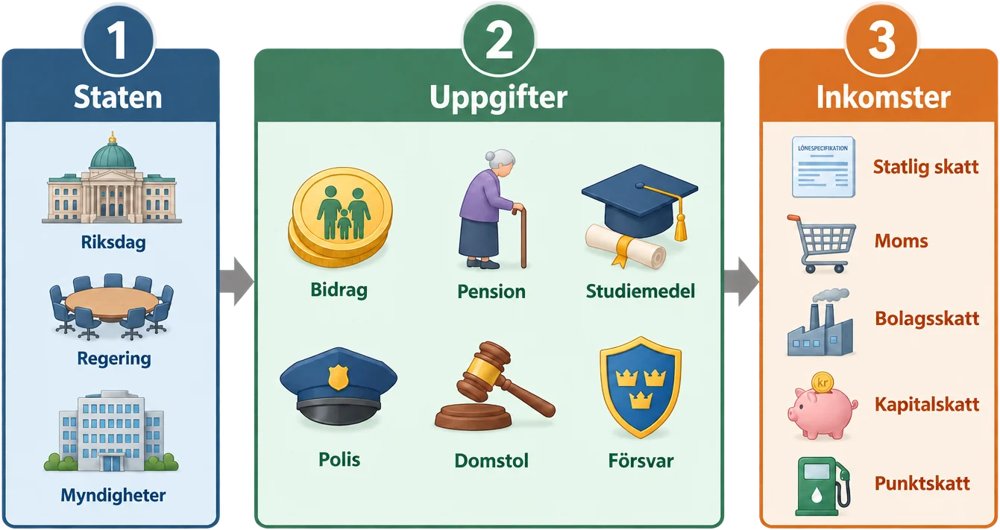
Staten består av riksdag, regering och myndigheter.
Myndigheterna genomför det som riksdagen och regeringen har bestämt.
Staten betalar ut bidrag och ersättningar genom Försäkringskassan.
Pensionsmyndigheten betalar ut pensionen och CSN betalar ut studiemedel.
Staten ansvarar för polisen, domstolarna och försvaret, och för att alla är lika inför lagen.
De som tjänar mest betalar statlig skatt.
Staten får moms när vi köper något och bolagsskatt på företagens vinst.
Staten tar också ut kapitalskatt, till exempel på ränta, och punktskatt på tobak, alkohol och bensin.
Bra att veta
Statens största utgift är statsbidrag till kommuner och regioner.
Exempel
Blir du sjuk som vuxen får du sjukpenning från Försäkringskassan, som är en statlig myndighet.
Del 3 Ekonomiska kretsloppet
Kort 8I boken: s. 255–256
Vad är det ekonomiska kretsloppet?
Det ekonomiska kretsloppet beskriver hur pengar rör sig i samhället och hur allt hänger ihop.
Kretsloppet har fyra aktörer: hushåll, företag, banker och offentlig sektor.
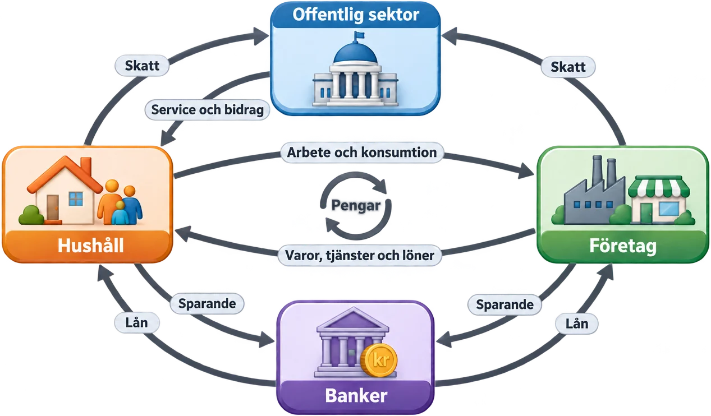
Hushåll
Hushållen arbetar i företagen och får lön.
För lönen konsumerar de varor och tjänster.
Företag
Företagen producerar varor och tjänster.
De betalar löner till dem som arbetar.
Offentlig sektor
Hushåll och företag betalar skatt till den offentliga sektorn.
Tillbaka får de service och bidrag, till exempel skola, vård och barnbidrag.
Banker
Hushåll och företag sparar på banken och får ränta.
Banken lånar ut pengar till den som behöver.
Därför är det viktigt
Alla delar är beroende av varandra. Om en del slutar fungera påverkas alla de andra.
Bra att veta
Delen mellan hushåll och företag kallas ibland den lilla ekonomin.
Kort 9I boken: s. 256–257
Vad bidrar hushållen med, varifrån kommer deras pengar och vad konsumerar de?
Ett hushåll är en person, en familj eller en grupp som bor tillsammans och hjälps åt med sin försörjning.
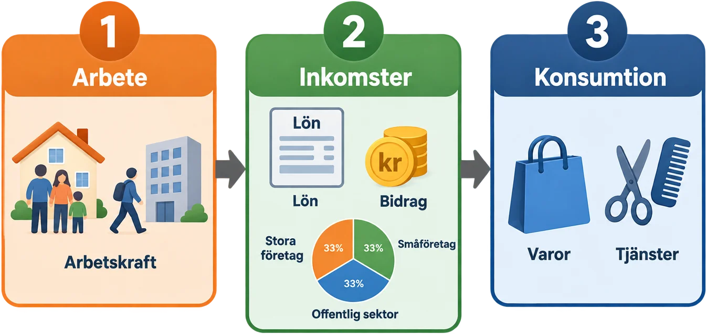
Hushållen bidrar med sin arbetskraft till företagen och den offentliga sektorn.
Det vanligaste sättet att få pengar är förvärvsarbete, alltså att arbeta och få lön.
Hushållen kan också få bidrag, till exempel barnbidrag och bostadsbidrag.
Ungefär en tredjedel arbetar i stora företag, en tredjedel i småföretag och en tredjedel i den offentliga sektorn.
För lönen konsumerar hushållen varor och tjänster.
En vara är något man kan ta på, som mat. En tjänst är service, som en klippning.
Exempel
En förälder jobbar på en fabrik, får lön och köper mat. Då går pengarna vidare till företagen, som kan betala nya löner.
Kort 10I boken: s. 257
Vad är skatt och vad används den till?
Skatt är pengar som vi betalar till stat, region och kommun för att betala samhällets gemensamma kostnader.
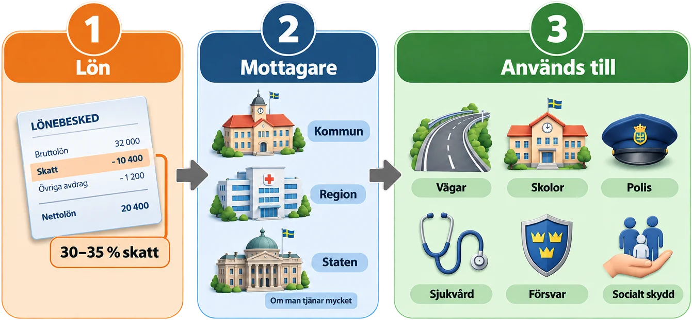
Alla som tjänar pengar betalar inkomstskatt på sin lön.
Den brukar vara mellan 30 och 35 % av inkomsten och skiljer sig mellan kommuner.
Inkomstskatten går i första hand till kommunen och regionen.
Den som tjänar mest betalar också statlig skatt.
Skatten betalar sådant vi har gemensamt, till exempel vägar, skolor, polis, sjukvård och försvar.
Den betalar också socialt skydd för dem som har det svårast.
Exempel
På lönebeskedet i bilden går 10 400 kr av 32 000 kr till skatt.
Bra att veta
Vi betalar också skatt när vi köper saker, till exempel moms.
Kort 11I boken: s. 258
Vilken är den största delen av ett hushålls utgifter?
Den största delen av ett hushålls utgifter är boendet, till exempel hyra eller bolån.
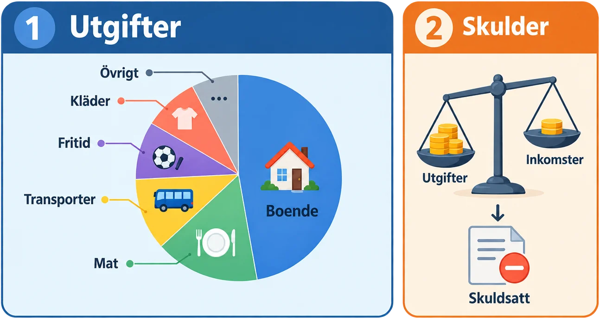
Den största utgiften är boendet.
Hushållen lägger också pengar på mat, transporter, fritid och kläder.
Andra utgifter är till exempel försäkringar, sophämtning och bredband.
Ett hushåll som har högre utgifter än inkomster lever över sina tillgångar.
Då får hushållet skulder och blir skuldsatt.
Bra att veta
Hushållen är viktiga eftersom de både arbetar och konsumerar. Det håller företagen och kretsloppet igång.
Kort 12I boken: s. 259–261
Vilken roll har företagen i samhällets ekonomi?
Företagens viktigaste uppgift är att skapa varor, tjänster och arbetstillfällen.
Utan företag stannar konsumtionen, och många jobb försvinner.
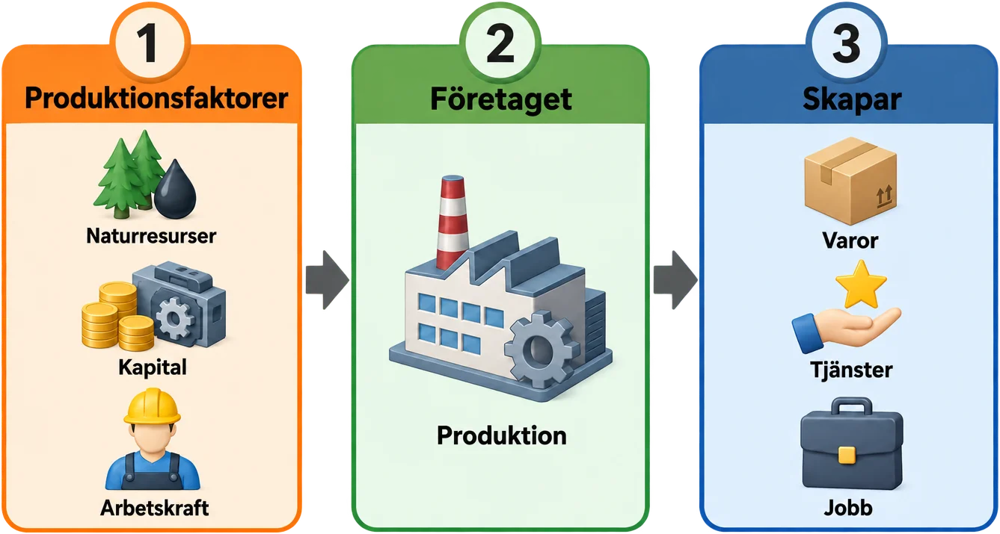
För att producera behöver företagen produktionsfaktorer.
Naturresurser är tillgångar från naturen, till exempel olja eller trä.
Kapital är pengar, aktier, maskiner och byggnader.
Arbetskraft är människorna som arbetar.
Företaget använder produktionsfaktorerna i sin produktion.
Målet är att tjäna pengar och gå med vinst.
Produktionen ger varor och tjänster som hushållen kan köpa.
Den skapar också jobb, så att människor får lön.
Exempel
Tiina är snickare och startar ett byggföretag. Hon behöver verktyg och fordon (kapital), sin egen arbetskraft och material.
Bra att veta
Vanliga företagsformer är enskild firma, handelsbolag och aktiebolag.
Kort 13I boken: s. 259
Vilka sätt finns det för ett företag att få kapital?
För att ett företag ska kunna producera behöver någon investera pengar i det. Det finns tre vanliga sätt att få kapital.
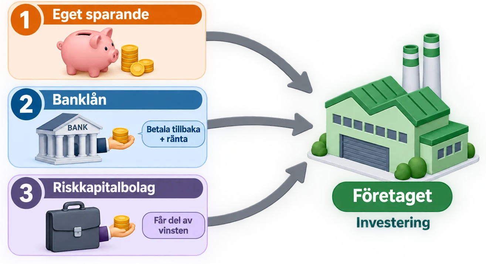
1Eget sparande
Ägaren använder sina egna sparade pengar.
2Banklån
Företaget lånar pengar av en bank.
Lånet måste betalas tillbaka med ränta.
3Riskkapitalbolag
Ett riskkapitalbolag satsar pengar på företagets affärsidé.
I gengäld får bolaget en del av den framtida vinsten.
Exempel
Tiina betalade sitt byggföretag med både sparade pengar och ett banklån.
Bra att veta
En investering är pengar som satsas i ett företag för att ge vinst i framtiden.
Kort 14I boken: s. 260
Vad händer i samhället när företag går bra, och när de går dåligt?
Det är viktigt för hela samhället att företagen går med vinst, eftersom det påverkar jobb, konsumtion och skatt.
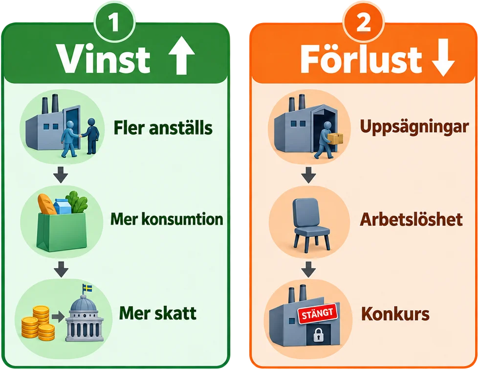
När företagen går bra kan de anställa fler.
De som får jobb kan konsumera mer och betalar skatt.
Arbetslösheten minskar, och det blir en positiv utveckling för hela samhället.
När företagen går dåligt måste de säga upp personal eller spara på andra sätt.
Fler blir arbetslösa, och samhällets kostnader ökar när fler behöver bidrag.
Ett företag som inte kan betala sina skulder går i konkurs och måste lägga ner.
Bra att veta
Ett företag går med vinst när inkomsterna är större än utgifterna.
Provtips
Visa kedjan: vad händer först, och vad leder det till?
Kort 15I boken: s. 262
Vad gör bankerna?
Bankerna tar hand om våra pengar. De fungerar som ett smörjmedel för de andra delarna i kretsloppet.
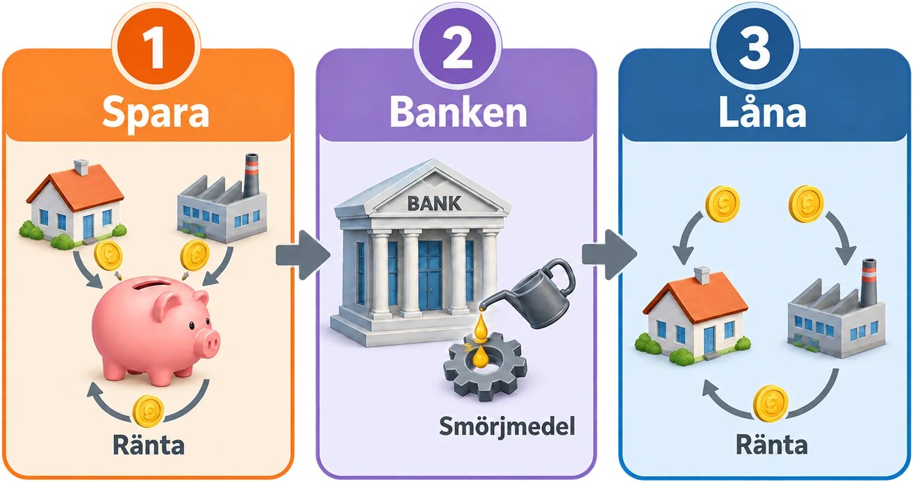
Hushåll, företag och offentlig sektor sparar pengar på banken.
För det får de ränta.
Banken använder de sparade pengarna till att låna ut.
Utan bankerna skulle de andra delarna i kretsloppet ha svårt att fungera tillsammans.
Den som behöver finansiera något kan låna pengar av banken.
Lånet ska betalas tillbaka, och man betalar ränta.
Bra att veta
Ränta är det man betalar för att låna pengar, eller det man får för att spara.
Exempel
En familj lånar till ett hus, och ett företag lånar till nya maskiner.
Kort 16I boken: s. 262
Vad gör den offentliga sektorn?
Till den offentliga sektorn räknas allt som görs av stat, region och kommun.
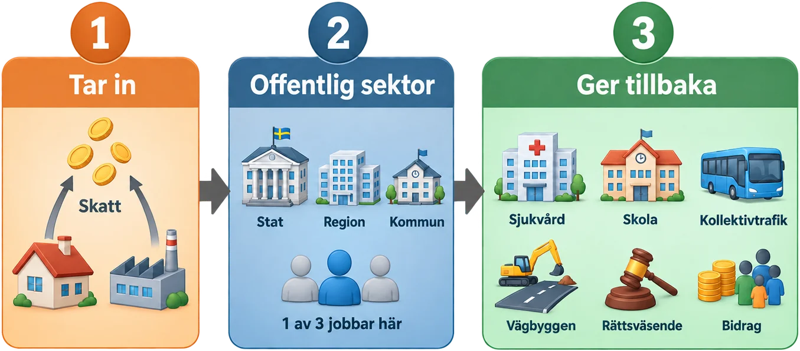
Hushåll och företag betalar skatt till den offentliga sektorn.
Pengarna går till staten, regionerna och kommunerna.
Ungefär en av tre som arbetar i Sverige jobbar i den offentliga sektorn.
Den offentliga sektorn ger service, till exempel sjukvård, skola och kollektivtrafik.
Den bygger vägar, sköter rättsväsendet och betalar ut olika bidrag.
Exempel
En sjuksköterska på sjukhuset och en polis arbetar i den offentliga sektorn.
Del 4 Begrepp
Kort 17I boken: Begreppslistan
Vad är en konsument?
En konsument är en person som köper och använder varor och tjänster.
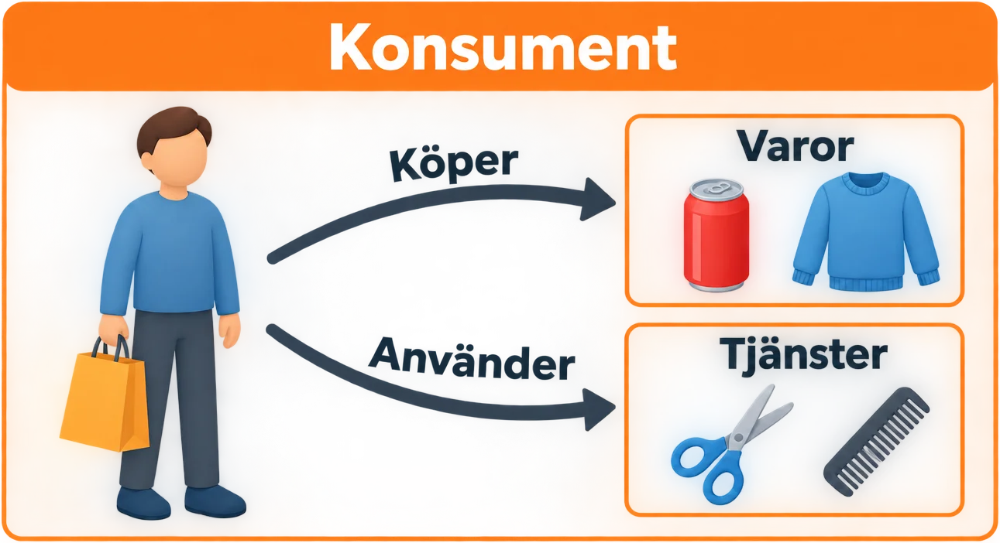
Konsumenten köper varor, till exempel en läsk eller en tröja.
Konsumenten använder också tjänster, till exempel när man går till frisören.
Exempel
När du köper en läsk i affären är du konsument.
Motsats
Den som tillverkar eller säljer kallas producent.
Kort 18I boken: Begreppslistan
Vad är en producent?
En producent är den som tillverkar eller säljer varor och tjänster.
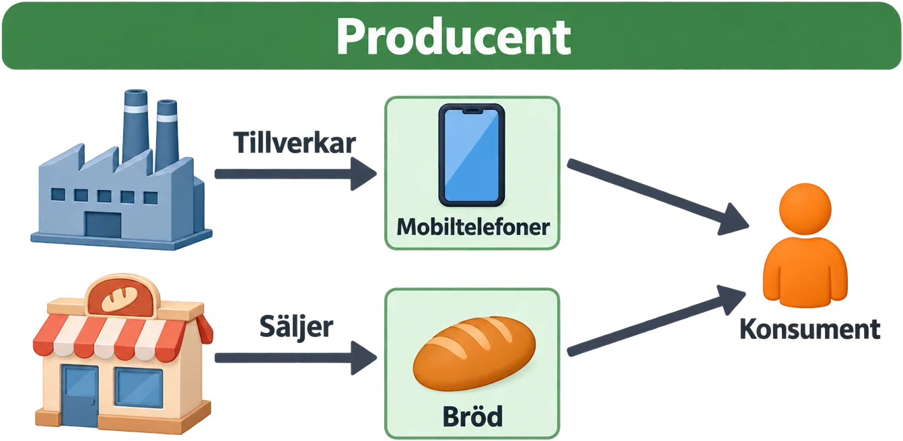
En fabrik som gör mobiltelefoner är en producent.
Ett bageri som bakar och säljer bröd är också en producent.
Producenten säljer till konsumenten.
Bra att veta
Producenter vill sälja när priset är högt, och konsumenter vill köpa när priset är lågt.
Kort 19I boken: Begreppslistan
Vad är offentlig sektor?
Offentlig sektor är den del av samhället som staten, regionerna och kommunerna ansvarar för.
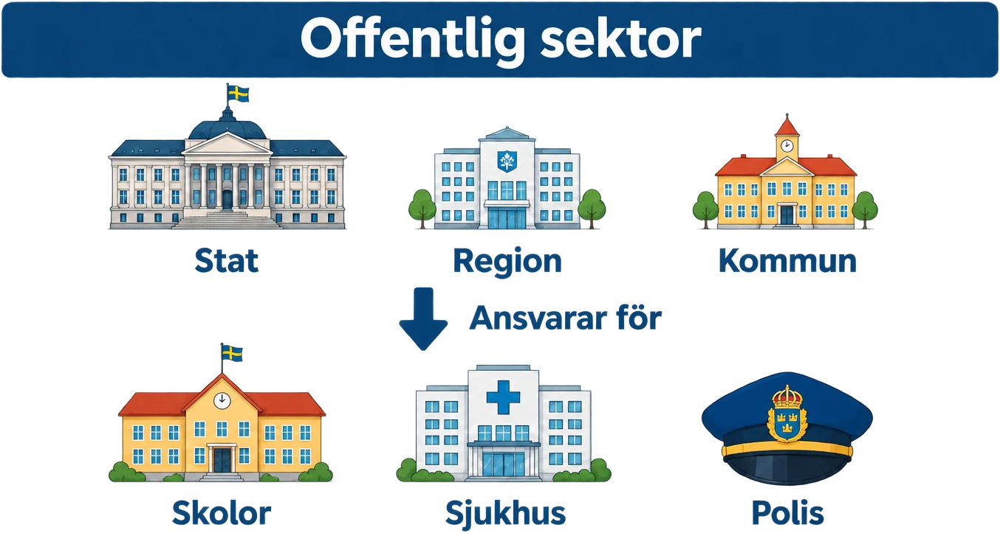
Den offentliga sektorn ansvarar till exempel för skolor, sjukhus och polis.
Den betalas med skatt.
Motsats
Det som ägs och drivs av företag och privatpersoner kallas privat sektor.
Kort 20I boken: Begreppslistan
Vad är inkomstskatt?
Inkomstskatt är den skatt du betalar på din lön.
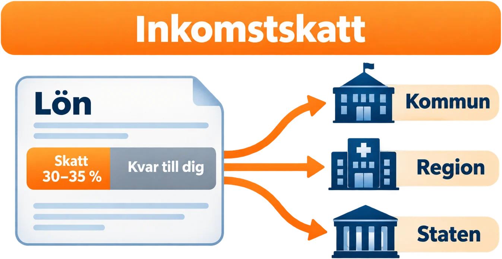
Den brukar vara 30–35 % av lönen.
Pengarna går till kommunen och regionen, och den som tjänar mest betalar också till staten.
Pengarna betalar gemensamma saker, till exempel skola och vård.
Bra att veta
Inkomstskatt är en direkt skatt, eftersom den dras direkt från lönen.
Kort 21I boken: Begreppslistan
Vad är moms?
Moms (mervärdesskatt) är en skatt som läggs på nästan allt du köper.
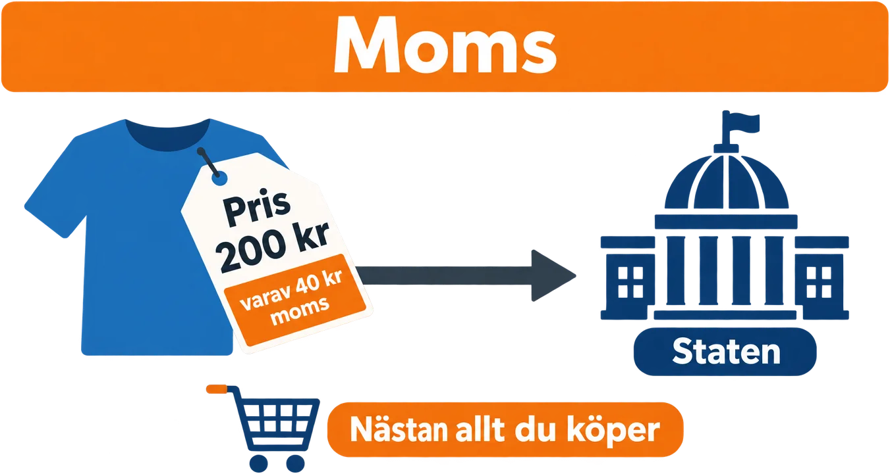
Momsen ingår i priset du betalar i affären.
Pengarna går till staten.
Exempel
En tröja kostar 200 kr. Av det är 40 kr moms.
Bra att veta
Moms är en indirekt skatt, eftersom man betalar den när man köper något.
Kort 22I boken: Begreppslistan
Vad är punktskatt?
Punktskatt är en extra skatt på vissa varor, till exempel tobak, alkohol och bensin.
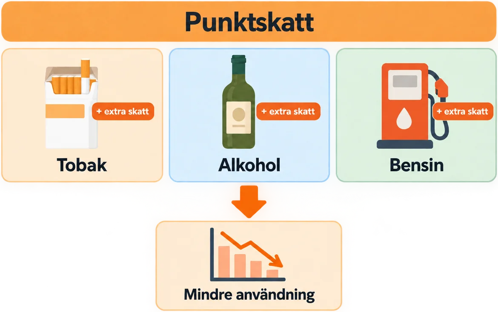
Varorna är skadliga för oss eller för miljön.
Den extra skatten gör varorna dyrare, så att människor ska använda mindre av dem.
Bra att veta
Punktskatten går till staten.
Kort 23I boken: Begreppslistan
Vad är arbetsgivaravgifter?
Arbetsgivaravgifter är pengar som arbetsgivaren betalar till staten utöver din lön.
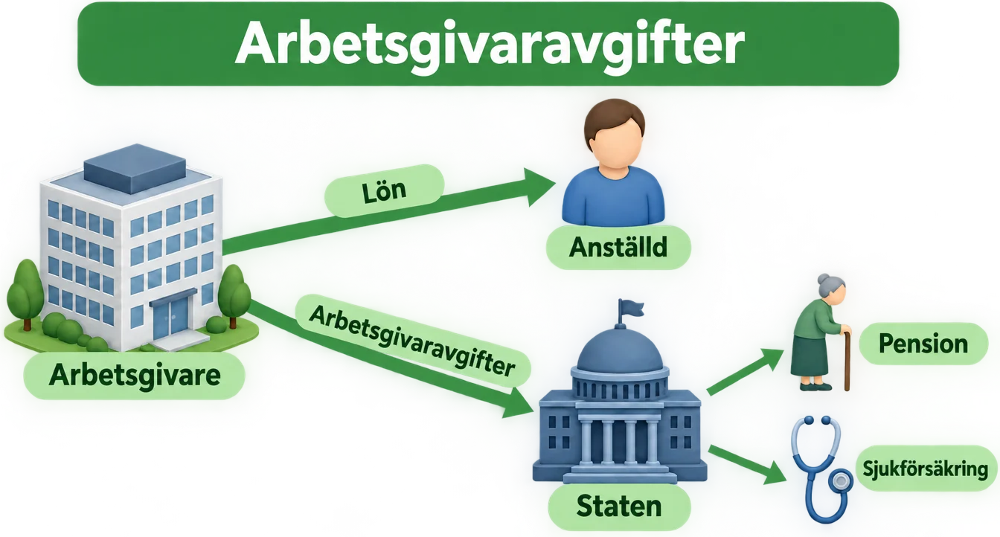
Arbetsgivaren betalar lön till den anställda.
Utöver lönen betalar arbetsgivaren arbetsgivaravgifter till staten.
Pengarna används bland annat till pensioner och sjukförsäkring.
Bra att veta
Det är arbetsgivaren som betalar avgifterna, inte den anställda.
Kort 24I boken: Begreppslistan
Vad är högkonjunktur?
Högkonjunktur betyder ”goda tider”, alltså när ekonomin går bra.
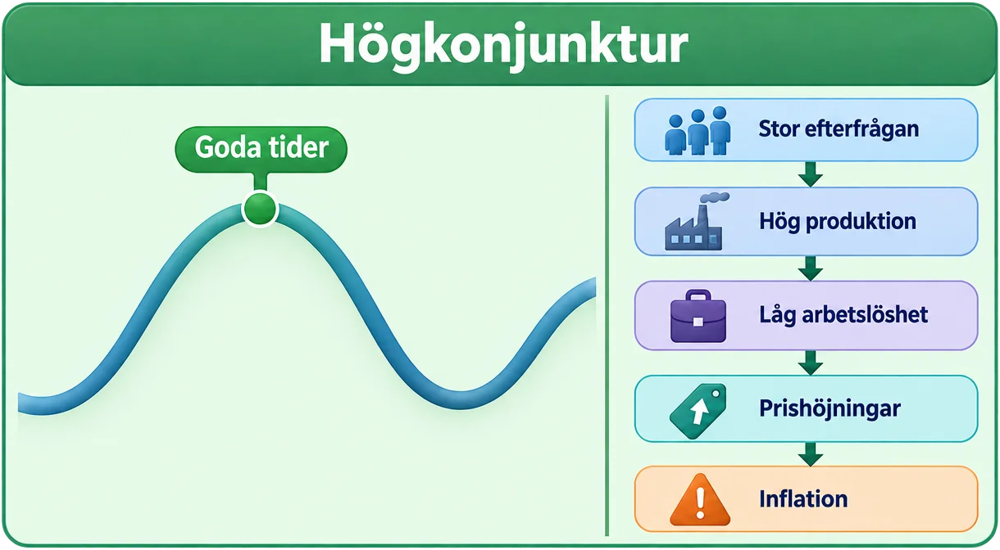
Det finns en stor efterfrågan på varor och tjänster.
Därför ökar produktionen, och arbetslösheten är låg.
Företagen tjänar pengar, och staten får in mer skatt.
Men priserna kan stiga, och då kan det bli inflation.
Bra att veta
Ekonomin går i vågor. En hel våg kallas konjunkturcykel och varar oftast 5–8 år.
Kort 25I boken: Begreppslistan
Vad är lågkonjunktur?
Lågkonjunktur betyder ”sämre tider”, alltså när ekonomin går sämre.
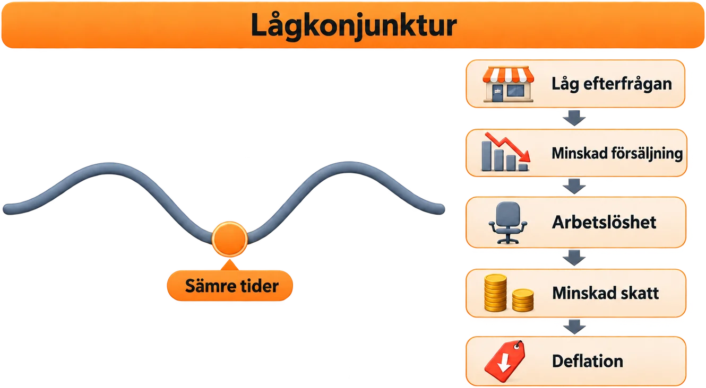
Efterfrågan på varor och tjänster minskar, så företagen säljer mindre.
Fler blir arbetslösa, och företag kan gå i konkurs.
Staten får in mindre skatt men får större kostnader för stöd till arbetslösa.
Då kan kommuner och regioner behöva spara.
Bra att veta
En mycket lång och djup lågkonjunktur kallas depression.
Kort 26I boken: Begreppslistan
Vad är inflation?
Inflation betyder att priserna stiger och att pengarna blir mindre värda.
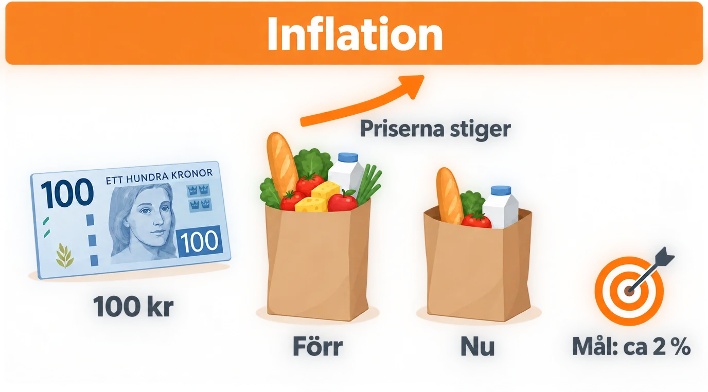
Du får mindre för samma summa pengar.
Politikerna är överens om att inflationen ska ligga runt 2 % per år.
Riksbanken styr inflationen med reporäntan.
Exempel
För 100 kr fick man förr en full matkasse. Nu räcker samma hundralapp till mindre.
Bra att veta
Motsatsen, när priser och löner sjunker, kallas deflation.
Kort 27I boken: Begreppslistan
Vad är marknadsekonomi?
Marknadsekonomi är ett system där priserna styrs av utbud och efterfrågan.
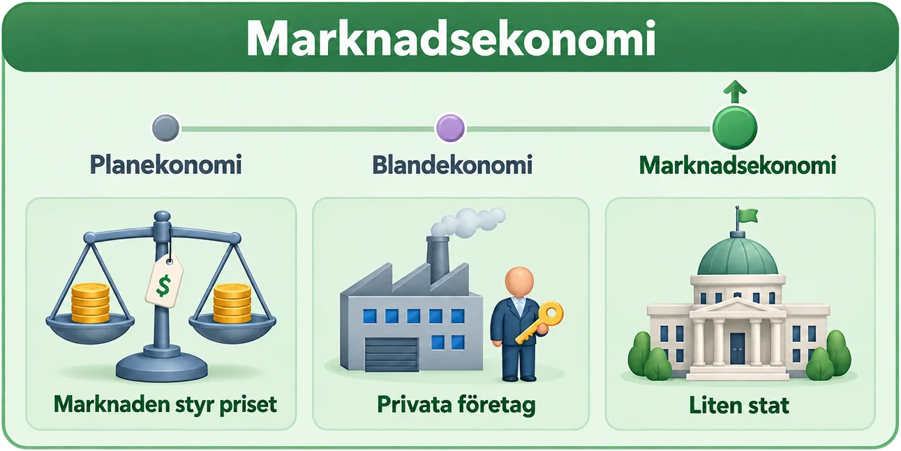
Företagen ägs privat, och det finns konkurrens.
I en ren marknadsekonomi lägger sig staten inte i ekonomin, så staten är liten.
För att det ska fungera behövs många köpare och säljare, och det ska inte finnas monopol.
Bra att veta
Liberaler och konservativa är ofta mest positiva till marknadsekonomi.
Kort 28I boken: Begreppslistan
Vad är utbud?
Utbud är hur mycket det finns av en vara eller tjänst som säljs på marknaden.
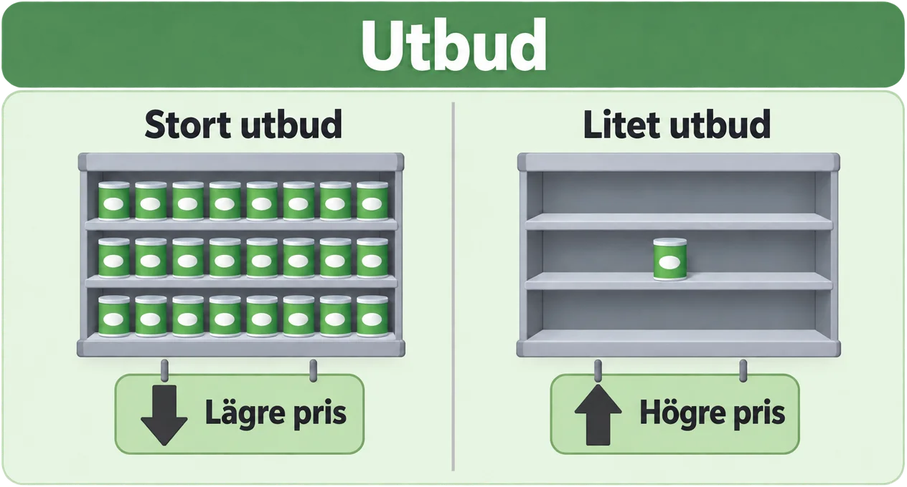
När utbudet är stort finns det mycket att välja på, och priset sjunker.
När utbudet är litet finns det lite kvar, och priset stiger.
Bra att veta
När priset stiger vill företagen sälja mer, och då ökar utbudet.
Kort 29I boken: Begreppslistan
Vad är efterfrågan?
Efterfrågan är hur mycket människor vill köpa av en vara eller tjänst.
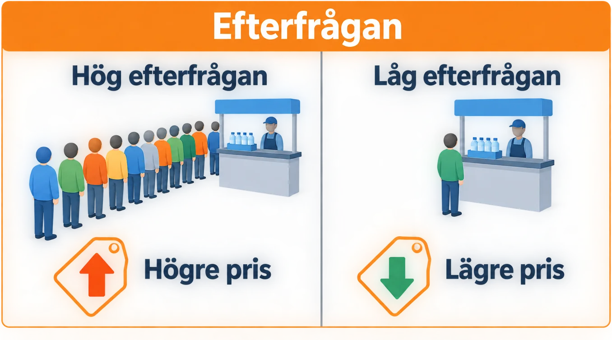
När efterfrågan är hög vill många köpa, och priset stiger.
När efterfrågan är låg vill få köpa, och priset sjunker.
Exempel
Våren 2020 ville alla köpa handsprit. Efterfrågan blev hög, och priserna steg kraftigt.
Kort 30I boken: Begreppslistan
Vad är planekonomi?
Planekonomi betyder att staten bestämmer vad som ska produceras, hur mycket och till vilket pris.
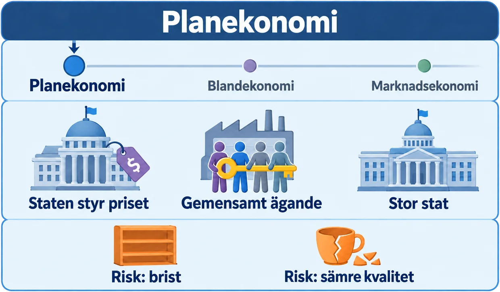
Så fungerar det
Mycket ägs gemensamt, ofta av staten.
Staten har stor makt, och människor har liten frihet att starta företag.
Risker
Det är svårt att veta vad som behövs, så det kan bli brist på vissa varor och överskott på andra.
Utan konkurrens riskerar varorna att få sämre kvalitet.
Bra att veta
Socialister och kommunister vill ofta att staten ska styra mer över ekonomin.
Kort 31I boken: Begreppslistan
Vad är blandekonomi?
Blandekonomi är en blandning av marknadsekonomi och planekonomi.
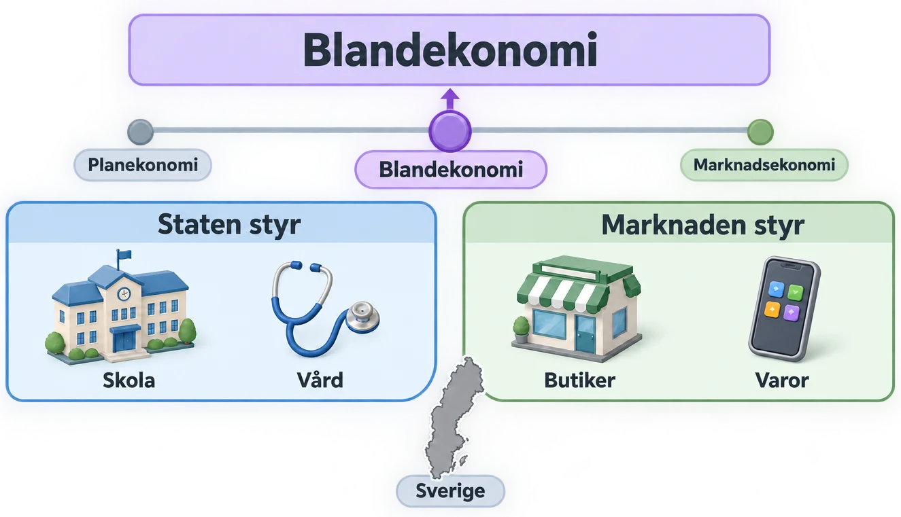
Staten styr
Staten styr vissa delar, till exempel skola och vård.
Marknaden styr
Företag och konsumenter bestämmer över andra delar, till exempel butiker och varor.
Exempel
Sverige har blandekonomi.
Bra att veta
Inget land har helt ren marknadsekonomi eller planekonomi. De flesta har blandekonomi.
Kort 32I boken: Begreppslistan
Vad är monopol?
Monopol betyder att ett enda företag, eller staten, är ensam om att sälja en viss vara eller tjänst.
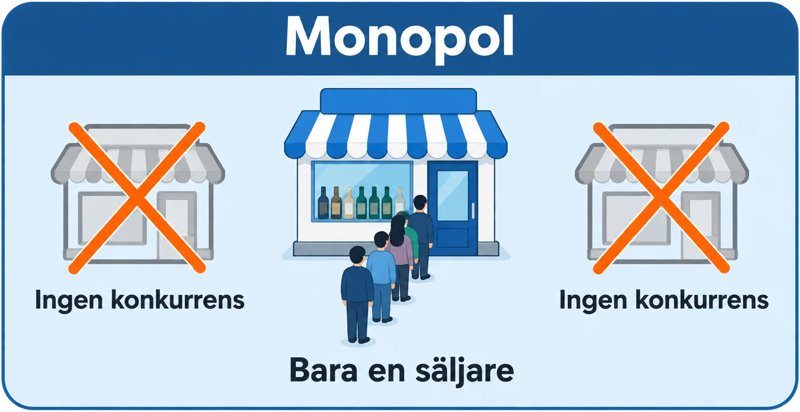
Det finns ingen konkurrens.
Då styrs priset inte av utbud och efterfrågan på vanligt sätt.
Exempel
Systembolaget har monopol på att sälja alkohol i Sverige, eftersom staten vill begränsa alkoholen.
Bra att veta
I en fungerande marknadsekonomi ska det inte finnas monopol.
Extra mer ur kapitel 10
Står inte som egen rubrik på provlappen, men finns i kapitel 10. Läs det här om du har tid över.
Kort 33I boken: s. 253
Vad är ekonomi, och vilka är ekonomins huvudfrågor?
Ordet ekonomi kommer från grekiskan och betyder ungefär hushållning.
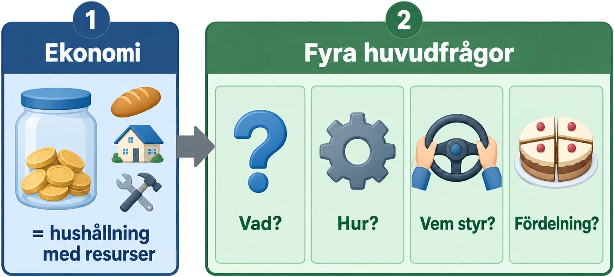
Ekonomi handlar om att hushålla med resurser, alltså få dem att räcka.
Det gäller allt från ett barnbidrag till hela Sveriges ekonomi.
Vad ska produceras?
Hur ska produktionen gå till?
Vem ska styra över produktionen?
Hur ska resultaten fördelas?
Bra att veta
Samhällets ekonomi bygger på tre saker: arbete, produktion och handel.
Tänk på
Frågorna har inga självklara svar. Olika ekonomiska system svarar på olika sätt.
Kort 34I boken: s. 254
Hur skapas värde?
Värde skapas genom arbete, när människor förädlar varor.
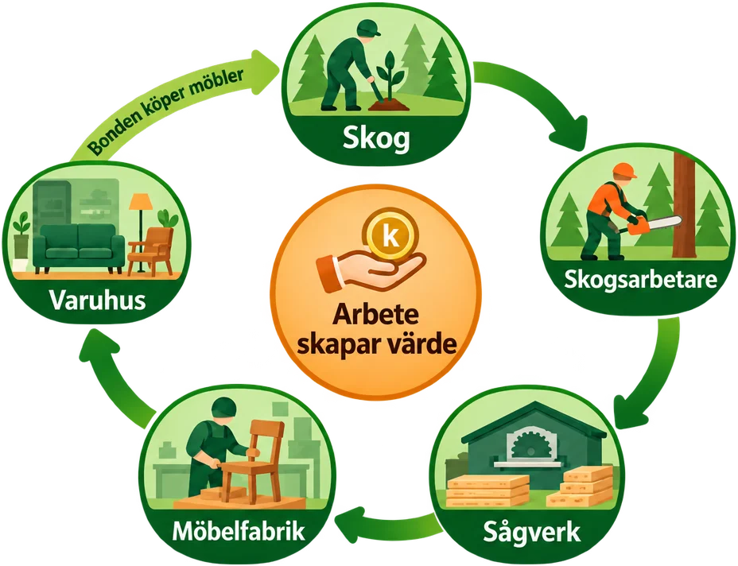
Kedjan
Skogsarbetaren hugger träd, sågverket gör virke och fabriken gör möbler.
Vid varje steg blir varan mer värd.
Möblerna säljs på varuhuset, och bonden som planterade skogen kan köpa dem.
Lön
Den som arbetar får lön som ersättning.
Lönen betalas för den tid man lägger ner och det värde man skapar.
Bra att veta
Även sparade och lånade pengar hänger ihop med arbete. Lånar du måste du arbeta för att betala tillbaka.
Kort 35I boken: s. 255
Varför behöver vi handla med varandra?
Vi behöver handla eftersom ingen kan göra allt själv.
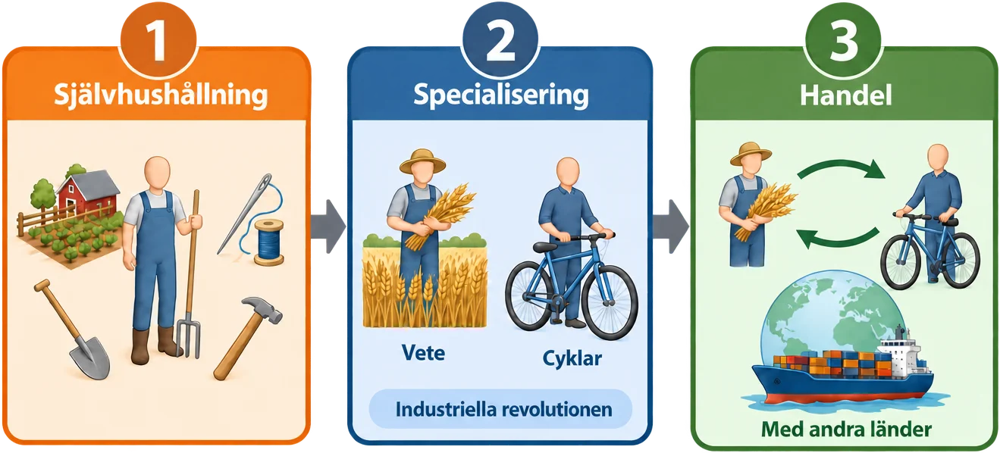
Förr var självhushållning vanligt.
Då producerade människor nästan allt de behövde själva.
Under den industriella revolutionen ökade specialiseringen.
De som var bäst på att odla vete gjorde det, och de som var bäst på att tillverka cyklar gjorde det.
För att få tillgång till olika varor måste vi handla med varandra.
Vi handlar både inom landet och med andra länder.
Genom handel kan råvaror flyttas dit de förädlas.
Kort 36I boken: s. 266–268
Vad betyder jämviktspris?
Jämviktspris är det pris som uppstår när utbud och efterfrågan är i balans.
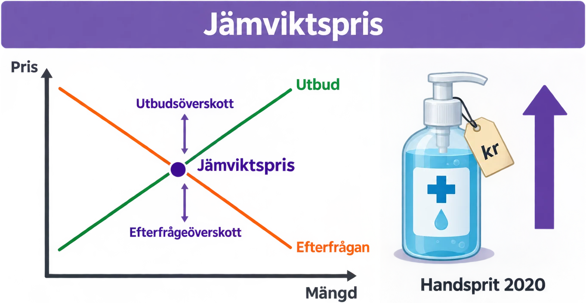
Är priset för högt vill få köpa, och det blir utbudsöverskott, alltså fler varor än någon vill ha.
Är priset för lågt vill många köpa, och det blir efterfrågeöverskott, alltså brist på varor.
Marknaden strävar mot ”det rätta priset”, där köpare och säljare möts.
Exempel
Våren 2020 ökade efterfrågan på handsprit kraftigt. Producenterna hann inte göra mer, så priset steg.
Bra att veta
Varor som vi måste ha, som mat, är inte så känsliga för prisändringar. Restaurangbesök är mer känsliga.
Kort 37I boken: s. 269
Vilka saker är de flesta politiska partier överens om?
De flesta partier har samma mål för ekonomin, men olika idéer om hur man når dem.
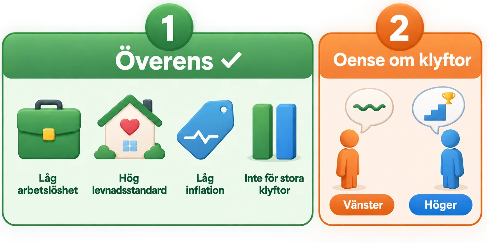
Alla vill ha låg arbetslöshet och hög levnadsstandard.
Alla vill att inflationen ska vara låg.
De flesta tycker att de sociala klyftorna inte ska vara för stora.
Politiker till höger kan tycka att vissa klyftor är bra, eftersom utbildning och hårt arbete ska löna sig.
Politiker till vänster tycker nästan alltid att klyftor är negativa och vill minska dem med fördelningspolitik.
Kort 38I boken: s. 269
Vad är BNP och BNP per capita?
BNP (bruttonationalprodukt) är värdet av alla varor och tjänster som produceras i ett land under ett år.
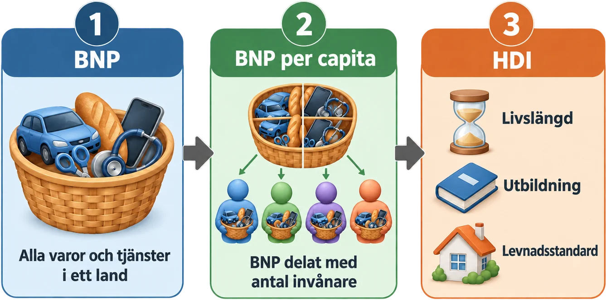
BNP visar hur stor ett lands ekonomi är.
Ett stort land har alltid större BNP än ett litet, så BNP säger inte hur rikt landet är.
BNP per capita är BNP delat med antalet invånare.
Ett land med hög BNP per capita är rikare än ett land med låg.
BNP per capita säger inget om hur pengarna är fördelade.
Därför har FN tagit fram HDI, som mäter livslängd, utbildning och levnadsstandard.
Kort 39I boken: s. 274
Vad är en depression?
En depression är en lång och djup lågkonjunktur.
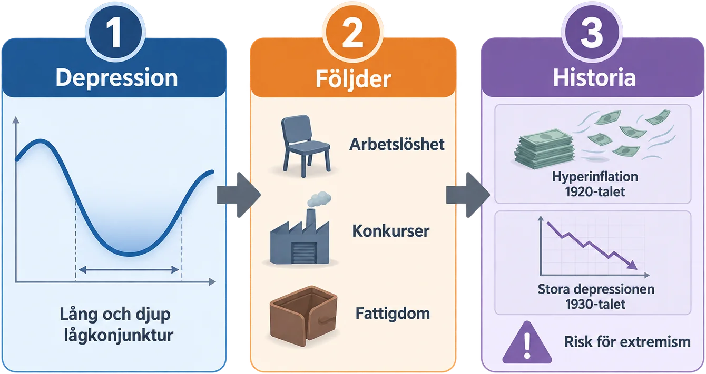
Arbetslösheten ökar kraftigt, och många företag måste läggas ner.
Människor förlorar sina jobb och sina hem, och fattigdomen ökar.
Många företag går i konkurs.
Vid hyperinflationen i Tyskland på 1920-talet blev sedlarna värdelösa.
Den stora depressionen på 1930-talet påverkade hela världens ekonomi.
Kriser kan ge grogrund för politisk extremism. Den stora depressionen bidrog till att nazismen tog makten i Tyskland.
Bra att veta
En depression kan börja när en ekonomisk bubbla spricker, alltså när priserna har stigit snabbt på grund av orealistiska förväntningar.
Kort 40I boken: s. 275
Vilka är målen för den ekonomiska politiken?
I Sverige brukar man säga att den ekonomiska politiken har fem mål.
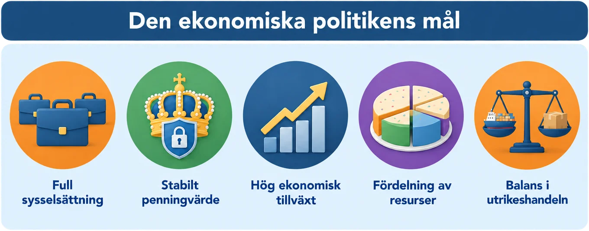
Full sysselsättning: alla som kan och vill ska ha ett jobb.
Stabilt penningvärde: låg och stabil inflation.
Hög ekonomisk tillväxt: ekonomin ska växa.
Fördelning av resurserna: klyftorna ska inte bli för stora.
Balans i utrikeshandeln: vi ska exportera ungefär lika mycket som vi importerar.
Bra att veta
Målen ser olika ut i olika länder, beroende på vilken ideologi som styr.
Kort 41I boken: s. 275–276
Vad är penningpolitik, och hur används reporäntan?
Penningpolitik är de verktyg som Riksbanken använder för att hålla penningvärdet stabilt. Målet är att inflationen ska vara runt 2 %.
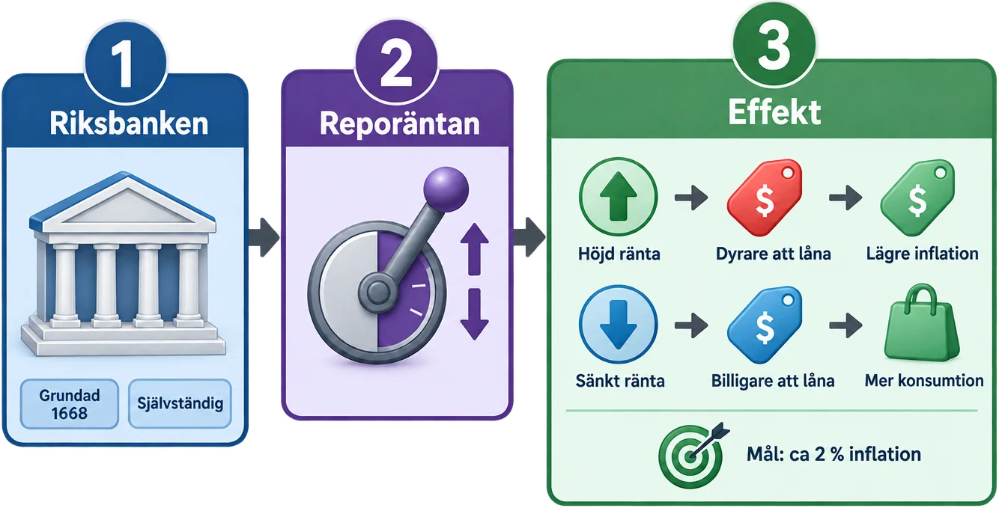
Riksbanken är Sveriges centralbank och grundades 1668.
Den är självständig och fattar sina beslut utan att politikerna lägger sig i.
Den ger ut sedlar och mynt.
Riksbankens viktigaste verktyg är reporäntan.
Den påverkar alla andra räntor i landet.
Höjer Riksbanken räntan blir det dyrare att låna. Människor konsumerar mindre, och inflationen sjunker.
Sänker Riksbanken räntan blir det billigare att låna, och människor konsumerar mer.
Exempel
Om räntan höjs får en familj med bolån högre kostnader och har mindre pengar över att handla för.
Kort 42I boken: s. 276–277
Vad är finanspolitik, fördelningspolitik och tillväxtpolitik?
Konjunkturpolitik ska jämna ut svängningarna i ekonomin och hålla nere både inflation och arbetslöshet.
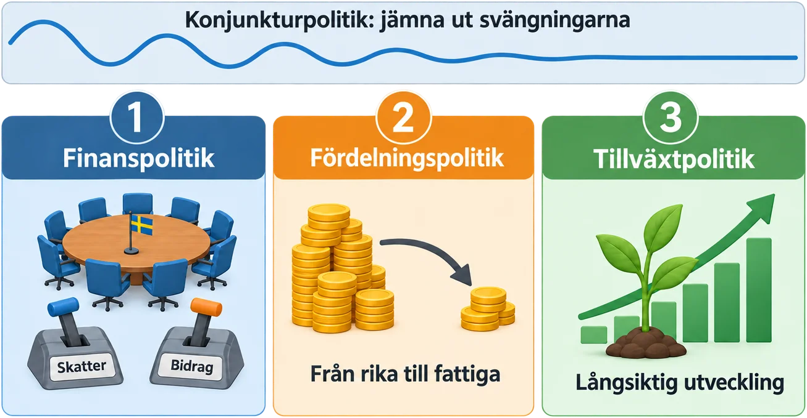
Regeringen styr statens inkomster och utgifter med skatter, bidrag och investeringar.
Vid lågkonjunktur kan staten sänka skatter och höja bidrag. Vid högkonjunktur gör den tvärtom.
Fördelningspolitik flyttar resurser från dem som har mycket till dem som har lite.
Det görs till exempel med skatter och bidrag.
Tillväxtpolitik ska skapa långsiktigt positiv ekonomisk utveckling.
Partier till vänster satsar gärna på offentlig verksamhet, och partier till höger vill ofta stötta företag och sänka skatter.
Bra att veta
Fördelningspolitik kallas ibland välfärdspolitik, eftersom skola och vård för alla är ett sätt att fördela resurser.
Kort 43I boken: s. 278
Vilka ekonomiska idéer har funnits genom historien?
Genom historien har det funnits olika idéer om hur ekonomin ska organiseras.
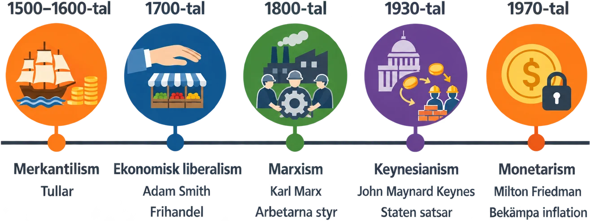
Merkantilism, 1500–1600-tal
Länderna ville importera råvaror, förädla dem och exportera.
Höga tullar skyddade den egna produktionen.
Ekonomisk liberalism, 1700-tal
Adam Smith ville ta bort alla hinder för handel och ha frihandel.
En ”osynlig hand”, alltså marknaden, skulle lösa resten.
Marxism, 1800-tal
Karl Marx menade att samhället präglas av kamp mellan klasser.
Arbetarna skulle ta kontroll över produktionen.
Keynesianism, 1930-tal
John Maynard Keynes ville att staten skulle spara i högkonjunktur och satsa i lågkonjunktur.
Målet var att minska arbetslösheten.
Monetarism, 1970-tal
Milton Friedman såg inflationen som det största problemet.
Den skulle bekämpas genom att begränsa mängden pengar, och staten skulle reglera så lite som möjligt.
Kort 44I boken: s. 279
Hur fungerar statens budget?
Precis som en familj gör staten en budget, fast för ett helt år.
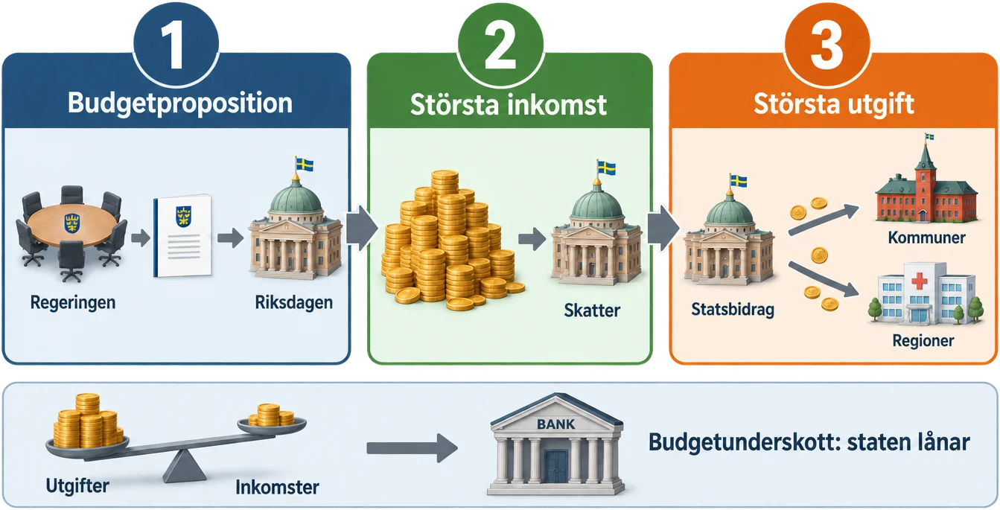
Regeringen lämnar varje år en budgetproposition till riksdagen.
Den är regeringens viktigaste dokument, eftersom den styr alla andra politiska förslag.
Riksdagens partier skriver egna förslag, budgetmotioner, och debatterar.
Statens största inkomst är skatter.
Statens största utgift är statsbidrag till kommuner och regioner.
Rika kommuner får mindre och fattiga kommuner får mer.
Bra att veta
Om utgifterna är större än inkomsterna blir det budgetunderskott. Då måste staten låna pengar.
Fördjupning Frågor och svar
Här tränar du på att förklara hur saker hänger ihop. Svaren är skrivna steg för steg, så som du kan skriva dem på provet.
Så svarar du på en sambandsfråga
Börja med det som händer först
Vad är orsaken? Skriv det i första meningen.
Följ kedjan steg för steg
Varje mening leder vidare till nästa. Hoppa inte över något steg.
Använd sambandsord
eftersom, därför, det leder till, då, om … så, samtidigt.
Säg vem som påverkas
Hushållen, företagen, kommunen eller staten?
Avsluta med en slutsats
Vad visar exemplet om hur samhället hänger ihop?
Välfärden
Fråga 1
Varför betalar den som tjänar mer också mer skatt?
I Sverige betalas välfärden med skatt, och den som tjänar mer betalar mer.
Eftersom de med hög lön betalar mer, får samhället in mer pengar till sådant som alla använder, till exempel skola, vård och omsorg.
Det leder till att även de som har låg inkomst får tillgång till bra välfärd.
På så sätt blir skillnaderna mellan människor mindre, och det är ett av välfärdens viktigaste mål.
Därför betalar den som tjänar mest också statlig skatt, utöver skatten till kommun och region.
Fråga 2
Varför får vi mest av välfärden i början och slutet av livet?
Som barn och unga får vi mycket av välfärden: förskola, skola, barnbidrag och studiebidrag. Samtidigt betalar vi nästan ingen skatt.
När vi blir vuxna börjar vi arbeta, och därför betalar vi mest skatt mitt i livet.
När vi blir äldre slutar vi arbeta och får pension. Vi behöver dessutom ofta mer vård och äldreomsorg.
Det betyder att de som arbetar i dag betalar för både barnen och de äldre.
Välfärden bygger alltså på att vi hjälps åt mellan generationerna.
Fråga 3
Varför får alla barnbidrag, men bara de som är med i en a-kassa får a-kassa?
Barnbidraget är ett allmänt bidrag. Alla familjer får det, oavsett hur mycket de tjänar.
Syftet är att alla barn ska få en trygg start, och därför behöver familjen inte betala något för att få det.
A-kassan fungerar i stället som en försäkring.
Man måste ha varit medlem i en arbetslöshetskassa och betalat avgift för att få ersättning. Dessutom får man bara pengar under en begränsad tid.
Skillnaden är alltså att barnbidraget betalas med skatt till alla, medan a-kassan bygger på att man själv har betalat in.
Fråga 4
Varför kan det vara svårt att få en privat vårdcentral i glesbygd?
I glesbygd bor det få människor på en stor yta.
Eftersom det finns få patienter, får en privat vårdcentral in mindre pengar.
Privata företag vill gå med vinst, och därför startar de hellre vårdcentraler där det bor många.
Det leder till att det kan saknas privata alternativ på landsbygden.
Men samhället måste ge vård till alla. Därför måste regionen ändå se till att det finns vård även i glesbygden.
Det här är ett av de argument som motståndarna till privatisering använder.
Kommun, region och stat
Fråga 5
Varför sköter regionen sjukvården och inte kommunen?
Sjukvård är mycket dyr, till exempel sjukhus, specialistläkare och avancerad utrustning.
En liten kommun skulle inte ha råd att ha ett eget sjukhus.
Därför samarbetar flera kommuner inom ett större område, en region.
På så sätt kan kostnaderna delas av fler invånare.
Samma sak gäller kollektivtrafiken, som också går över kommungränserna.
Fråga 6
Vad händer i en kommun när många flyttar därifrån?
När människor flyttar blir det färre som arbetar och betalar kommunalskatt.
Det leder till att kommunen får mindre pengar.
Kostnaderna minskar däremot inte lika snabbt, eftersom skolor, äldreomsorg och vägar ändå måste finnas.
Om det är de unga som flyttar, blir andelen äldre större, och då kan behovet av äldreomsorg öka.
Kommunen kan därför behöva spara eller höja skatten.
Staten hjälper till med statsbidrag, eftersom fattiga kommuner får mer än rika.
Fråga 7
Om du går i friskola, vem betalar då?
Det är fortfarande skattepengar som betalar skolan.
Invånarna betalar kommunalskatt till kommunen.
Kommunen betalar sedan en skolpeng för varje elev.
Om eleven väljer en friskola, går skolpengen till friskolan i stället för till den kommunala skolan.
Därför är friskolan gratis för eleven, trots att den drivs av ett privat företag.
Fråga 8
Varför bestämmer staten skollagen fast kommunen äger skolorna?
Kommunen äger skolorna och anställer lärarna.
Men alla elever i Sverige ska få en likvärdig utbildning, oavsett var de bor.
Därför bestämmer staten skollagen och läroplanerna som alla skolor måste följa.
På så sätt lär sig en elev i Kiruna samma sak som en elev i Malmö.
Det gäller ävenfriskolor, som också måste följa skollagen.
Ekonomiska kretsloppet
Fråga 9
Vad händer om hushållen slutar handla?
Om hushållen slutar handla, minskar efterfrågan på varor och tjänster.
Det leder till att företagen säljer mindre och tjänar mindre pengar.
Därför måste företagen säga upp personal.
Fler blir arbetslösa, och då har ännu fler hushåll mindre pengar att handla för.
Samtidigt får stat, kommuner och regioner in mindre skatt, men får större kostnader för stöd till arbetslösa.
Till slut kan kommunerna behöva spara, till exempel på skola och äldreomsorg.
Det här visar att alla delar i kretsloppet är beroende av varandra.
Fråga 10
Vad händer på en ort när ett stort företag går i konkurs?
Ett företag går i konkurs när det inte kan betala sina skulder.
Då förlorar alla som jobbar där sina jobb.
Det leder till att fler behöver a-kassa eller försörjningsstöd.
De arbetslösa har mindre pengar, och därför handlar de mindre i ortens butiker. Då kan även andra företag få det svårt.
Kommunen får in mindre skattsamtidigt somkostnaderna ökar.
Om människor flyttar för att hitta nya jobb, minskar skatteintäkterna ännu mer.
Fråga 11
Varför behövs bankerna?
Hushåll och företag sparar pengar på banken och får ränta.
Banken använder de sparade pengarna till att låna ut.
Tack vare lånen kan en familj köpa ett hus, och ett företag kan köpa nya maskiner.
När företagen investerar kan de växa och anställa fler.
Därför kallas bankerna ett smörjmedel i kretsloppet. Utan dem skulle de andra delarna ha svårt att fungera tillsammans.
Fråga 12
Vad händer om staten sänker skatten?
Om skatten sänks, får hushållen mer pengar kvar av lönen.
Det leder till att de kan konsumera mer.
När efterfrågan ökar, säljer företagen mer och kan anställa fler.
Därför kan sänkta skatter användas för att få fart på ekonomin i en lågkonjunktur. Det kallas finanspolitik.
Men staten, regionerna och kommunerna får in mindre pengar till välfärden.
Å ena sidan kan ekonomin växa, å andra sidan kan det bli mindre pengar till skola, vård och omsorg.
Konjunktur, inflation och marknad
Fråga 13
Varför kan en högkonjunktur leda till inflation?
I en högkonjunktur är efterfrågan stor, och de flesta har jobb.
Företagen behöver mer arbetskraft, och därför kan de anställda kräva högre löner.
Högre löner gör att människor kan konsumera mer, vilket ökar efterfrågan ännu mer.
Samtidigt ökar företagens kostnader, och därför höjer de priserna.
Det leder till att priserna stiger, alltså inflation.
När löner och priser driver upp varandra kallas det en pris- och lönespiral.
Fråga 14
Varför får kommunerna det svårare i en lågkonjunktur?
I en lågkonjunktur minskar efterfrågan, och företagen säljer mindre.
Därför säger företagen upp personal, och fler blir arbetslösa.
De arbetslösa betalar mindre skatt, och det leder till att kommunen får mindre pengar.
Samtidigt behöver fler människor stöd, till exempel försörjningsstöd från kommunen.
Kommunen får alltså mindre inkomster och större kostnader på samma gång.
Därför kan kommunen behöva spara, till exempel på skola eller äldreomsorg.
Fråga 15
Varför steg priset på handsprit 2020?
Våren 2020 kom coronaviruset till Sverige, och handsprit var ett bra skydd mot smitta.
Därför ville väldigt många köpa handsprit, och efterfrågan ökade kraftigt.
Producenterna hade inte hunnit tillverka mer, så utbudet var litet.
När efterfrågan är större än utbudet uppstår efterfrågeöverskott, alltså brist.
Det leder till att priset stiger.
Det här visar hur utbud och efterfrågan styr priset i en marknadsekonomi.
Fråga 16
Varför är hög inflation dåligt för den som sparar?
Inflation betyder att priserna stiger.
Om du har pengar på banken och priserna stiger, kan du köpa mindre för samma pengar.
Därför blir dina sparade pengar mindre värda.
Om inflationen ökar för snabbt, urholkas pengarnas värde ännu mer.
Dessutom blir svenska varor dyrare att sälja till andra länder, och det kan leda till att företag drar ner och att arbetslösheten ökar.
Därför vill Riksbanken att inflationen ska ligga runt 2 %.
Fråga 17
Varför finns det monopol på alkohol fast Sverige har blandekonomi?
I en blandekonomi styr marknaden det mesta, men staten styr vissa delar.
Nästan alla länder begränsar handeln med vissa varor, till exempel alkohol, mediciner och vapen.
Alkohol kan vara skadligt för människor.
Därför har staten bestämt att bara Systembolaget får sälja alkohol i butik. Det är ett monopol.
Då styrs priset inte av utbud och efterfrågan på vanligt sätt.
Staten tar också ut punktskatt på alkohol, och syftet är detsamma: att människor ska dricka mindre.
Resonera om två sidor
Här finns inget rätt svar. Visa att du förstår båda sidor, och avsluta med vad du tycker och varför.
Fråga 18
Ska privata företag få tjäna pengar på skola och vård?
Sedan 1990-talet får privata företag driva till exempel friskolor och vårdcentraler. Verksamheten betalas med skattepengar.
För
Konkurrens kan ge högre kvalitet, eftersom skolor och vårdcentraler måste vara bra för att människor ska välja dem.
Privata företag kan arbeta effektivare.
Människor får valfrihet att själva välja.
Emot
Vissa företag tar ut stora vinster genom mindre personal eller sämre kvalitet.
Skattepengar ska gå till välfärden och inte till företagsägare.
Företag startar hellre där det bor många, men samhället måste ge välfärd till alla, även i glesbygd.
Avsluta med din åsikt
Jag tycker att … eftersom … .
Det viktigaste argumentet för mig är … .
Samtidigt förstår jag att andra tycker … , eftersom … .
Fråga 19
Är marknadsekonomi eller planekonomi bäst?
I en marknadsekonomi styr utbud och efterfrågan. I en planekonomi bestämmer staten.
Talar för marknadsekonomi
Konkurrens gör att företagen måste göra bra varor till bra priser.
Människor har frihet att starta företag och välja vad de köper.
Men det kan bli stora klyftor, och den som har lite pengar kan få svårt att få vård och utbildning.
Talar för planekonomi
Staten kan se till att alla får sjukvård och utbildning.
Det blir lättare att nå politiska mål, till exempel att minska skillnaderna.
Men det kan bli brist och sämre kvalitet, och vissa menar att systemet kan bli odemokratiskt.
Inget land har helt ren marknadsekonomi eller planekonomi. Du kan också resonera om vilken blandning som fungerar bäst.
Avsluta med din åsikt
Jag tycker att … eftersom … .
Det viktigaste argumentet för mig är … .
Samtidigt förstår jag att andra tycker … , eftersom … .
Fråga 20
Ska skatten vara hög eller låg?
De flesta är överens om att vi ska ha vissa saker gemensamt, till exempel skola, rättsväsende och försvar. Men partierna är oense om hur stora skatterna ska vara.
Talar för högre skatt
Det blir mer pengar till skola, vård, omsorg och polis.
Skatten kan minska klyftorna, eftersom de som tjänar mer betalar mer.
Alla får trygghet om de blir sjuka, arbetslösa eller gamla.
Talar för lägre skatt
Människor får mer pengar kvar och kan själva bestämma vad de vill använda dem till.
Det kan löna sig mer att arbeta och utbilda sig.
Lägre skatt kan få fart på ekonomin, eftersom människor konsumerar mer och företag kan anställa.
Partier till vänster vill ofta ha högre skatt och mer välfärd. Partier till höger vill ofta sänka skatten.
Avsluta med din åsikt
Jag tycker att … eftersom … .
Det viktigaste argumentet för mig är … .
Samtidigt förstår jag att andra tycker … , eftersom … .
Fråga 21Utanför boken, bygger på s. 88
Vad händer med välfärden när fler blir äldre och färre arbetar?
Människor i Sverige lever allt längre. Bilden på s. 88 visar att vi får mest av välfärden när vi är unga och gamla, och betalar mest när vi arbetar.
Eftersom välfärden betalas av dem som arbetar, blir det färre som betalar för fler.
De äldre behöver pension, vård och äldreomsorg, och därför ökar kostnaderna.
Det leder till att det kan bli mindre pengar till annat, om inget ändras.
Möjliga lösningar
Fler arbetar längre: därför har pensionsåldern höjts till 64 år, och man får jobba kvar till 69 år.
Fler i arbete: om fler har jobb, blir det fler som betalar skatt.
Högre skatt: det ger mer pengar, men de som arbetar får mindre kvar.
Avsluta med din åsikt
Jag tycker att … eftersom … .
Det viktigaste argumentet för mig är … .
Samtidigt förstår jag att andra tycker … , eftersom … .
Svaren bygger på läroboken Fundament. Pensionsåldern i boken är 62 år. Dagens regler står i rutan Bra att veta på kort 2.
Begrepp
Välfärdssystemet
Kommun, region och stat
Ekonomiska kretsloppet
Samband
Begrepp
Kryssfrågor om begreppen
16 frågor. Välj alla svar som stämmer. Det kan vara fler än ett rätt svar.
Begrepp
Para ihop begrepp och förklaring
Dra varje begrepp till rätt förklaring, i två omgångar med åtta begrepp.
Begrepp
Hög- eller lågkonjunktur?
Sortera kännetecknen. Hör de till goda tider eller sämre tider?
Begrepp
Vilket ekonomiskt system?
Sortera påståendena efter vilket ekonomiskt system de beskriver.
Välfärdssystemet
Vad får man när i livet?
Sortera bidragen och välfärden efter när i livet man oftast får dem.
Kommun, region och stat
Vem ansvarar för vad?
Sortera uppgifterna efter vem som ansvarar för dem: kommunen, regionen eller staten.
Kommun, region och stat
Vart går pengarna?
Sortera skatterna och avgifterna efter vem som får pengarna.
Ekonomiska kretsloppet
Fyll i kretsloppet
Vad går längs varje pil? Dra rätt ord till varje pil. Ett av orden finns två gånger.
Samband
Sätt kedjan i ordning
Stegen i kedjan har hamnat i fel ordning. Lägg dem i rätt ordning, från det som händer först till det som händer sist.